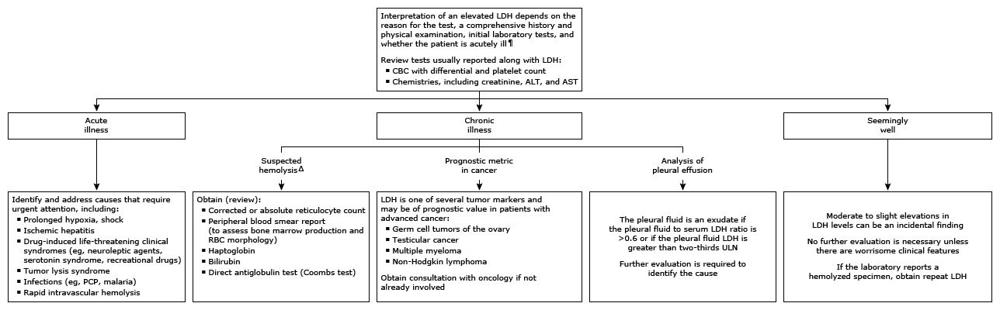

LD or LDH: lactic dehydrogenase; CBC: complete blood count; ALT: alanine aminotransferase; AST: aspartate aminotransferase; PCP: pneumocystis pneumonia; RBC: red blood cell; ULN: upper limit of normal.
* Interpretation of a specific abnormal result should be based upon the reference range reported with that result. The normal reference range for LDH varies widely from laboratory to laboratory because the assay measures the enzymatic activity of LDH rather than the quantity of LDH. Serial LDH measurements should be performed using the same assay.
¶ Marked elevations in LDH levels can be observed in acutely ill individuals. The hemodynamic insult is usually apparent before rise in LDH. Refer to the UpToDate table on causes of elevated LDH.
Δ Refer to additional Lab Interpretation monograph on low hemoglobin.